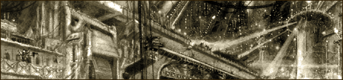
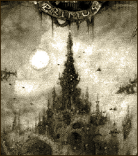
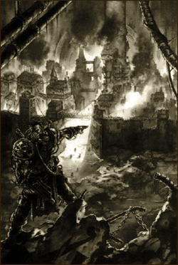

| |
Necromunda
bolyvárosai

Meredek hegyormokként meredeznek elõ a
hamusivatagból Necromunda bolyvárosai. Oromról
oromra, toronyról toronyra törnek a magasba, át
a mérgezett felhõk ködén, behatolva a
bolygó atmoszférájába. Milliónyi ember
lakhelye ez, mind egy-egy különálló
világ, körülvéve a végtelen
hamusivatag és a közeli városok által, akárcsak
az ûr és a benne fénylõ csillagok.
Senki nem tudja pontosan milyen idõsek
ezek a bolyvárosok. Óriási méretük évezredek
alatt fejlõdött ki, rétegrõl rétegre
terjeszkedve, át a bolygó szennyezett felszínén.
A legalacsonyabban fekvõ és legöregebb területek,
ma már mélyen a felszín alatt húzódnak,
eltemetve a maró hamu által, amely vastagon borítja
a város alapját. Ezek a régóta elhagyatott részei
a bolynak, ma már sötétek és veszélyesek.
Csak kémiai anyagoktól, betegségektõl és õrülettõl
fertõzött mutánsok lakják.
Ahol a boly megtöri a láthatárt, ott akár
tíz vagy több mérfölddel is a felszín fölé
magasodhat terjedelmes méretével. Ez az emberkéz
alkotta hegy, egészen a földközeli szintektõl tör rendíthe-
tetlenül a magasba. Idõ rágta,
adamantium falai túlnyúlnak a fluoreszkáló ködfelhõn,
túl a savas porrétegen, amely összefüggõ
takaróként borítja be Necromunda felszínét. A
város pedig egyre csak nyújtózik az ég felé,
át a kísérteties
ködökön, míg végül áthatol a felhõrétegen
és kilép a tûzõ nap fényére. A felhõréteg
magasságában a város falai, még további öt mérfölddel
magasodnak a hamusivatagok fölé.
A porréteg fölött a bolyváros egyetlen
karcsú tüskévé vékonyodik. Milliónyi fényponttal
ékes toronnyá, amely csaknem teljesen függõlegesen
nyújtózik a halványan fénylõ felhõk fölé,
és tör a csillagok irányába. A csúcsot számos,
eltérõ fajtájú és méretû páncélbuborék
tarkítja. Ezek a felszínen található kupolák
óvják meg az alattuk lévõ vegetációt a ritka
és száraz kinti levegõtõl. Karcsú tornyok törik
meg a külsõ burkot, hatalmas méretû és díszes
paloták ezek, mégis eltörpülnek a bolyváros
rendkívüli mérteihez képest. Megfelelõen alátámasztott
erkélyek nyúlnak ki, akár több száz méterre
is a nyílt ûrbe, hogy új területeket biztosítsanak
a terjeszkedésnek. Nagy, kör alakú landoló
platformok meredeznek ki a torony falaiból, a
magasabban tátongó sötét nyílások pedig a
bolyváros belsejében meghúzódó ûrkikötõket
rejtik.
Ilyenek hát Necromunda bolyvárosai, a
maguk sötét gyökerével és fényesen ragyogó
csúcsával. Mindegyik egy különálló,
elszigetelt világ,
olyan sokszínû és komplex, mint néhány önálló
planéta a Birodalom óriásában.
Egy, a középsõ rétegekben született
ember leélheti az életét anélkül, hogy akár
csak egyszer is látta volna Necromunda egét vagy
talpával érintette volna a felszínt. Sanyarú
sorsuk, hogy a
klánok ipartelepein dolgozzanak szolgamód vagy a
családi üzletet gyarapíthatsák. A többség feláldozza az életét és törekvéseit
egy nagyobb világ gazdagságáért.
Nem minden ember elégedett az örök körforgásban
való szüntelen robottal, sokan egy jobb korról
álmodnak. Néhányan erõ és gazdagság után sóvárognak,
de a legtöbben pusztán menekülni szeretnének a
lesújtó nyomorból. Mások a menekülés lehetõségét
keresik a klánok korlátozásai alól vagy a nagy
házak és a boly bénító társadalmi rendjébõl.
Bármik is legyenek az indokaik, annyi biztos,
hogy nincs hiány ifjú kalandorokból, akik
hajlandóak mindent kockára tenni azért, hogy
megízlelhessék a gazdagságot, a tekintélyt és
a hatalmat.
A Primus Boly
A legfontosabb bolyvárost Necromundán úgy
hívják, hogy Primus Boly avagy az Egyes
Boly. Primus a legnagyobb és a legöregebb
a többi város közül. Belseje megszámlálhatatlan
sok kamrát és kupolás termet rejt,
melyek sokszor több mérföld hosszan, és
több száz méter magasan terpeszkednek a
város szívében. Ezek a helyek nagyban különböznek
egymás- tól, sokszínûségük a pazar
palotáktól, egészen a rákos sejtként
burjánzó ipari komplexumokig terjed. A
bolynak szinte kaptárszerû jelleget kölcsönöz
a különbözõ méretû kupolák sokasága,
egyik a másikon, tárnák és alagutak hálózatával
összekötve, melyekben szüntelenül áramlik
a forgalom, az energia és más fontos ellátmányok,
keresztül a bolyvároson. |
 |
A város rendelkezik egy függõleges
tagoltsággal. Egészen a legmagasabban fekvõ területektõl
kezdve,
le a föld alatt elterülõ mélységekig. Ezek a következõk:
a Csúcs, a Bolyváros, az Alsóváros
és a Városalap.
Primus
bolyváros szerkezeti felépítése
A Csúcs
A Csúcs kiterjedése a felhõréteg magasságában
kezdõdik, átfúrja a bolygó atmoszféráját,
és kecsesen magasodik az egész boly fölé. Ez a hét
nagy klán területe, akiket úgy is neveznek,
hogy a Nemesi Házak. A Nemesi Házak
szoros együttmûködést tartanak fent a
galaktikus kereskedõkkel és tõkésekkel,
akiknek vezetõi a bolygó mérhetetlen vagyona
felett rendelkeznek. A legerõsebbet a hét ház közül
úgy hívják, hogy a Helmawr Ház, vagy
ahogyan mások ismerik, a Birodalmi avagy az
Uralkodó Ház. A ház ura, Lord Gerontius
Helmawr, a halhatatlan Istencsászár nevében,
az Emberi Birodalom Adeptusa és Necromunda
Oltalmazója. Nemcsak Primus bolyváros teljhatalmú
ura, de egész Necromundáé is.
A Csúcs az óriási, szabad térségek és
a ragyogó fényûzés fellegvára, az alattuk húzódó
sötétségben élõ tömegek által elképzelhetetlen
pompa megtestesítõje. Az emberek itt gondtalanul
élvezik a galaxist behálózó civilizáció gyümölcseit.
A mélyen a Csúcs falaiba süllyesztett ûrkikötõkbõl
hajók tömegei indulnak a világûrbe, hogy
elvigyék Necromunda termékeit szerte a
Birodalomba. Viszonzásul pedig a galaxis gazdagabb
szektorai elárasztják a várost egzotikus ételekkel,
érzéki rabszolgákkal, mûvészi alkotásokkal
és távoli csillagok ritka érceivel.
A Bolyváros
A Csúcs legalsó szintje alatt, egy tömör
adamantium réteg húzódik, amelyet úgy hívnak:
a Fal. Ez az összefüggõ tömeg választja
el a torony felsõbb régióit az alatta elterülõ
Bolyvárostól. Néhol masszív kapubejáratok törik
meg a Fal felszínét, lehetõvé téve az átáramló
forgalom mindenre kiterjedõ ellenõrzését, a
boly két szegmense közt. A
Fal alatt terül el a dolgozó város óriási tömege,
az öt mérföld mély sötétség, maga a Bolyváros.
Ezen terület méreteit jól jellemzi, hogy
kiterjedése egészen a felhõtakaró rétegnél
kezdõdik, és onnan tart a föld felszíne felé.
A Bolyváros feletti uralom, hat óriási
gyár-birodalom közt van felosztva, melyek szintén
házakként ismertek. Minden ház saját területet
birtokol a városból, melyet önmaga kormányoz a
saját törvényei szerint, teljesen elszigetelve
a többi háztól. A bolylakók a sötétben élik
le az életük. Születésük napjától halálukig
szûkös és szennyezett körülmények közt,
soha nem látva a napot. A
felülrõl leáramló újrahasznosított levegõt
lélegzik be, ami egyre keserûbbé és mérgezõbbé
válik, ahogyan lefelé szivárog. Újratisztított
vizüket a felsõbb régiók mocskos csatornáiból
nyerik, míg ételük moszatból vagy a halottakból
kinyert, üzemileg elõállított mesterséges táplálék.
A körülményeket a zsúfoltság és az egészségtelenség
jellemzi, és ahogyan egyre haladunk lefelé, a környezet
úgy lesz egyre sötétebb és lakhatatlanabb.
|
 |
Az Alsóváros
A bolyvárosnak ezen mélységeiben a beomló
járatok nagy, terméketlen hulladékzónákat
hoztak létre, és gyakran fordul elõ, hogy az
itt élõknek víz és energia nélkül kell tengõdniük.
A mélyebben fekvõ területek egyre ingatagabbak,
levegõjük rossz, az energiael- látottságuk és
megközelíthetõségük pedig drasztikusan
romlik. A boly legmélyén olyan körülmények
ural- kodnak, melyek lehetetlenné teszik a normális
életet. Ezt a területet nevezik az Alsóvárosnak.
Nincs ismert határa az Alsó- és a Bolyvárosnak,
mert az a közeg, amit a két városrész határának
lehetne nevezni, állandóan változóban van. A
Bolyváros elhagyatott területeit az Alsóváros
újjáépíti, és újra belakja. Ennek következtében
az Alsóváros egy örökkön változó határterület,
ahol az emberek szüntelenül az új lehetõségeket
keresik, és menekülnek a gyorsan lesújtó végzet
elõl.
Maga az Alsóváros
viszont több okból is egy határ-
|
|
| területet
képez a bolyon elül. Nem pusztán egy elválasztó
vonal a Bolyváros és a Városalapot lakó elképzelhetetlen
borzalmak közt, hanem egy olyan térség is,
amely már kívül esik a boly formális törvényei
és rendje alól. Bolyváros lakosai gondosan szabályozott
keretek közt élnek, védve vannak a házak és a
boly szigorú társadalmi törvényei által,
amiket a családok pátriárkái határoznak meg.
A fekély módjára burjánzó Alsóvárosban
azonban nem létezik törvény, csak zûrzavar. Külvilágtól
elzárt telepek jelentik a relatív rend egyetlen
védõbástyáit. De még ezekben a elzárt menedékekben
is a mindennapi élet része a gyilkosság és az
erõszak. Az emberek életét itt a fegyver törvénye
határozza meg, és az önvédelem jelenti az
egyetlen és legmegbízhatóbb menedéket számukra. |
A Városalap
A város gyökereinél, az épületek
már életveszélyesen ingataggá válnak, és a régió
egy eddigiektõl eltérõ, barátságtalan
jelleget ölt. Ez a legutolsó, és egyben legmélyebb
zóna, amit úgy hívnak: a Városalap. A Városalap
mára már elrothadt és düledezõvé vált,
mivel a valaha volt boltívek és támpillérek
hosszú ideje összeomlottak, egységes törmelékréteget
hozva létre. A törmelékben számos üreg található,
melyeket összekötnek a fentrõl aláhulló folyékony
anyagok által kimosott vájatok és aknák. Az egész
bolyvárosból ide ömlik a mérgezõ, szennyezett
hulladék, amely az idõk folyamán egy hatalmas,
bûzös, radioaktív tavat alakított ki, a Teknõt.
A leggyalázatosabb és legellenállóbb
mutánsokat leszámítva senki nem képes megélni
a Városalapban. Csak a sötétség ivadékai
honosak errefelé, és a mérhetetlen szennyezés.
Néhányan ezek közül az alantas teremtmények közül
megtalálják a módját, hogy feljussanak az Alsóvárosba,
esetleg a Bolyváros alacsonyabb régióiba, de a
természetes közegük mindig is a Városalap sötétsége
marad.
Fordította: Rince
(A fordítás a hivatalos Necromunda szabálykönyv,
the Hives of Necromunda címû ismertetõje alapján készült.)
|
|